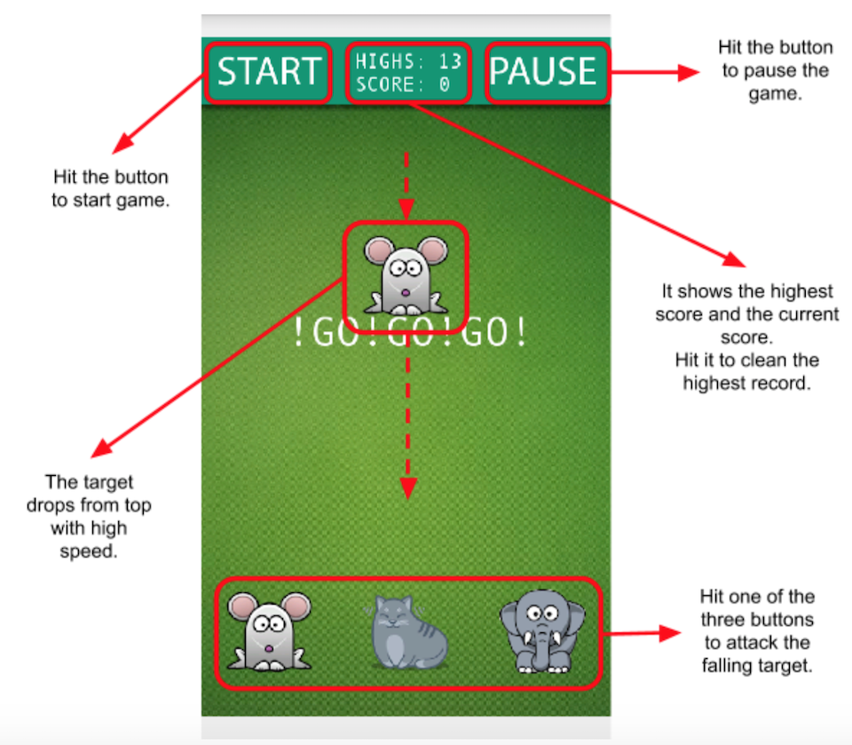
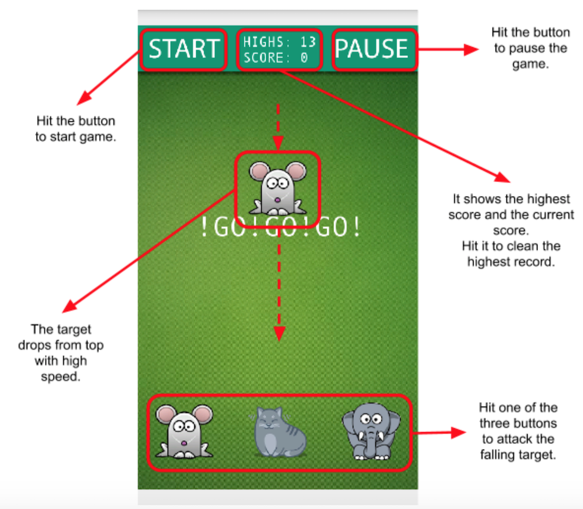

Jungle Rush
Jungle Rush is a "rock-paper-scissors like" game build with Andengine. The bite circle is modified to elephant-cat-mice. In the game, targets will keep dropping from the top of the screen, and the player has to click the right button on the bottom for biting targets.
The UI style and sound effects can be exchanged in: ./../JungleRushAlpha/app/src/main/assets
Enjoy!
 
